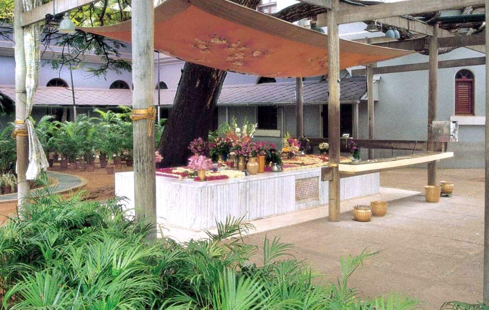
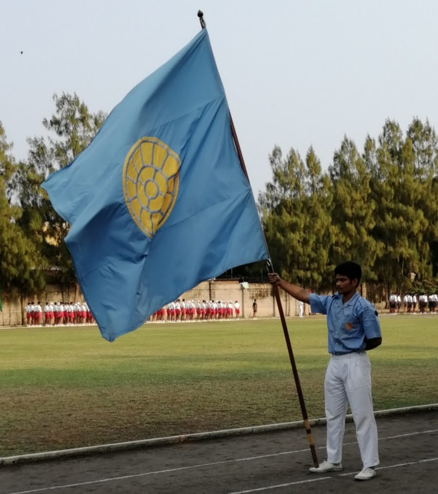
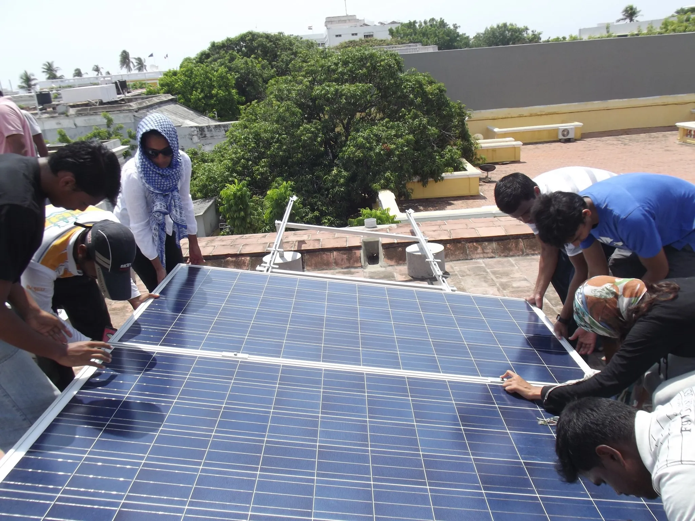
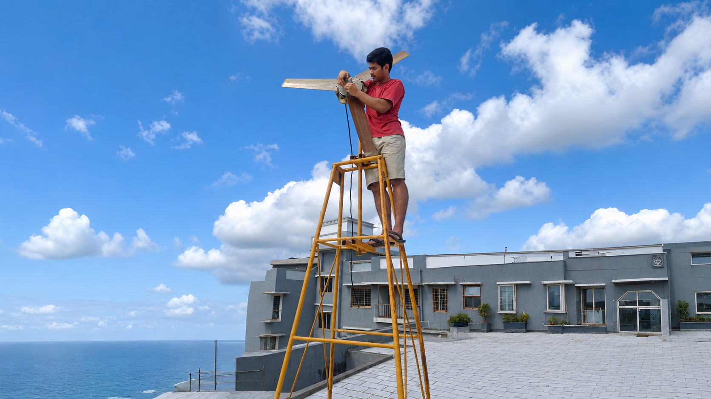
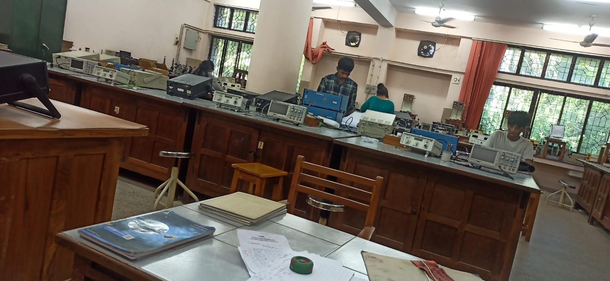
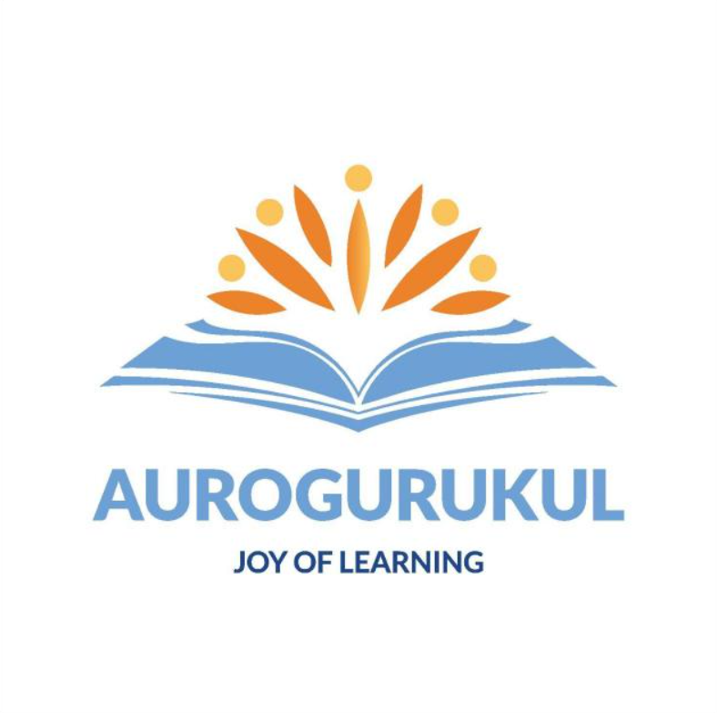
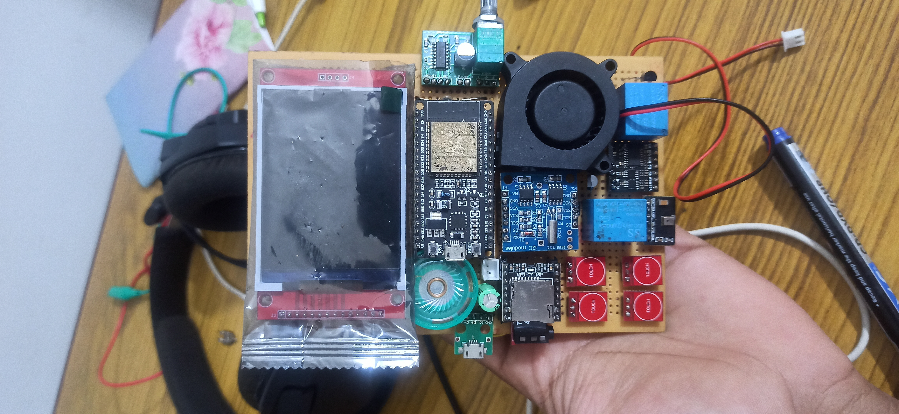
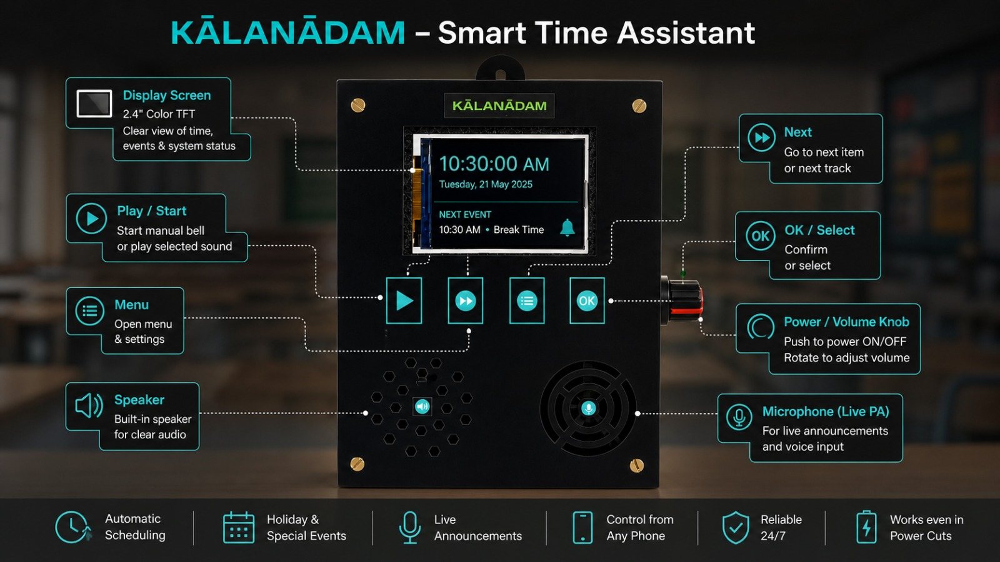

My Journey
A story shaped by curiosity, science, leadership, renewable energy and building things with my hands.

Curious Child
I rarely left objects untouched. Toys were dismantled, modified and rebuilt simply to understand how they worked. Understanding reality was always more exciting than accepting things at face value.

Growing Up In Sri Aurobindo Ashram
The Ashram provided an environment that encouraged exploration, service, physical education, arts and self-development. It transformed a shy child into someone willing to learn, lead and experiment.

Leadership & Growth
Through physical education, presentations and community activities I gradually became more confident. Becoming a Standard Bearer and leading groups taught me responsibility, communication and teamwork.

Solar Energy Monitoring
At India's first fully solar-powered school, I helped monitor photovoltaic systems and learned how renewable energy operates in real-world conditions.

Wind Turbine Research
Curious about our coastal wind resources, I helped propose and build a student-led wind turbine project, studying generation potential using local weather data.

Environmental Surveys
Ecological field surveys and environmental education introduced me to the connection between people, ecosystems and sustainability.

Physics
Physics became the lens through which I explored reality. It taught me how much humanity understands—and how much remains unknown. It strengthened my appreciation for experimentation, measurement and critical thinking.

Aurogurukul Team Lead
During my MSc journey I helped lead teams developing science experiments and educational kits. It was my first opportunity to combine science, teaching and leadership.

Embedded Systems
Electronics evolved from curiosity into a practical skill. I began building custom devices to solve specific real-world problems using sensors, controllers and automation.

KĀLANĀDAM
An ESP32-based smart bell and announcement system created for schools and institutions. It combines scheduling, music playback and live announcements into a reliable standalone platform.

Today
Today I focus on helping people solve unique electromechanical problems through embedded systems, instrumentation, diagnostics and custom-built solutions.